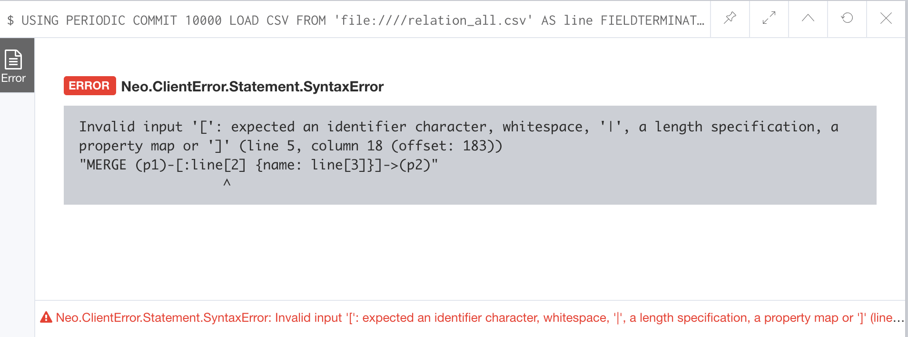

Neo4j 导入动态类型关系
今天在构建一批新的关系时，需要用 LOAD CSV 批量导入一些关系数据进去，但是这次的关系类型并不是固定的，而是在文件中指定的，CSV 文件格式如下：
1 | AWI9o1sbC5n_pY7tOUdL|AWI96tqyetLN4cQh5GnC|EMERGENCY|紧急联络人 |
第一列和第二列分别两个 Person 节点的 UUID，第三列是关系类型（type），第四列是关系的名称（name）。
我刚开始这样写的导入语句：
1 | USING PERIODIC COMMIT 10000 |
但是发现无法执行，由错误信息可知（下图所示），Neo4j 原始的 LOAD CSV 语句是不支持动态创建关系类型的。

我之前在介绍 Neo4j 冷启动预热缓存 时介绍过一个插件：APOC，这个插件功能非常强大，比如提供了很多好用的路径算法和强大的函数，之后有机会的话会慢慢介绍，今天介绍一下他的动态创建关系的函数 apoc.create.relationship，函数说明如下：
apoc.create.relationship(person1,'KNOWS',{key:value,…}, person2) create relationship with dynamic rel-type
所以我的导入语句只需要改成：
1 | USING PERIODIC COMMIT 10000 |
就完事大吉了。
但是考虑到这个 CSV 文件中的关系可能存在重复，所以我通过文档找到了另一个函数：
apoc.merge.relationship(startNode, relType, {key:value, …}, {key:value, …}, endNode) - merge relationship with dynamic type
这个函数中需要传两组 key-value，第一组是用来判断关系是否重复的，第二组是一些其他属性。
最终的导入语句如下：
1 | USING PERIODIC COMMIT 10000 |